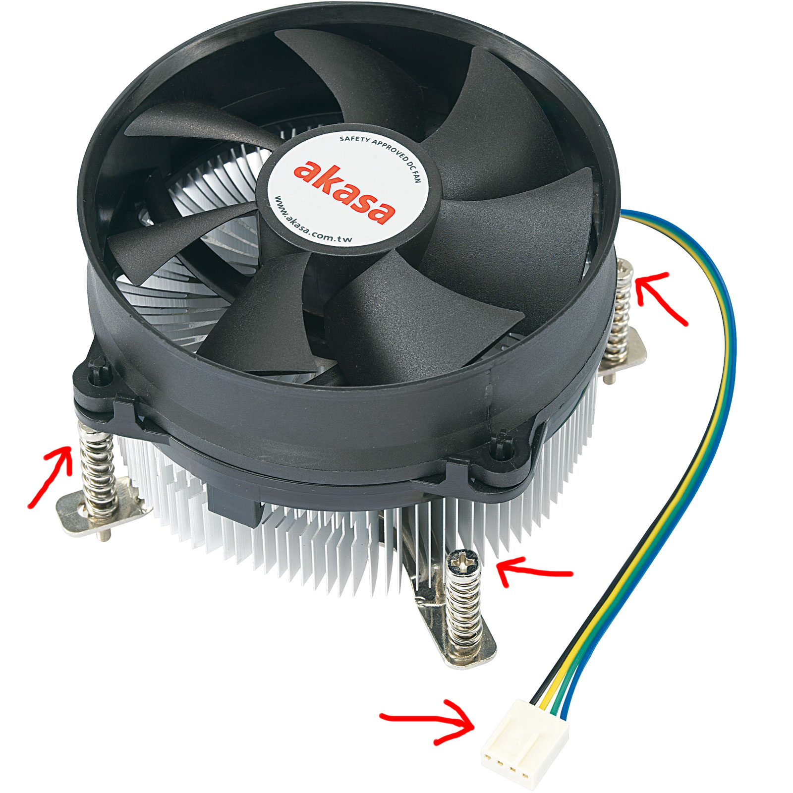

Aceasta este ultima problemă pe care am întâlnit-o. Cauza ei este supraîncălzirea procesorului. Atunci când procesorul calculatorului nu este răcit adecvat și atinge temperaturi destul de ridicate (peste 100℃), el își efectuează un restart forțat pentru a răci, înainte ca procesorul să se strice.
Primul pas este de a ne asigura ca ventilatoarele atașate de carcasă nu sunt pline de praf. Praful poate cauza un flux scăzut de aer în interiorul carcasei care aduce de la sine temperaturi ridicate. După curățarea acestora, vedeți dacă problema încă persistă.
Dacă nimic nu s-a schimbat, va trebui să schimbăm pasta termoconductoare care se află între radiatorul care se află peste procesor și procesor. Primul pas este de a scoate cele două panouri laterale ale carcasei. Radiatorul are peste el atașat un ventilator. Vom urma cablul care pleacă de la ventilator și îl vom desconecta de la placa de bază (nu uitați să țineți minte de unde l-ați scos). Radiatorul este prins de placa de bază cu patru șuruburi. Le vom desfileta și cu mare atenție vom trage de el în timp ce îl învârtim ca să nu iasă și procesorul. Cu un șervețel îmbibat in alcool (recomand alcool izopropilic, dar orice alcool sanitar este bun) vom șterge radiatorul și procesorul de pasta veche. Pentru o pastă nouă, eu am folosit pasta termoconductoare produsa de Arctic, modelul MX-6.
Vom aplica pe procesor pastă termoconductoare cât de mărimea unui bob de mazăre și vom așeza radiatorul peste acesta. Cu o mână vom ține de plăcuța care se află pe spatele plăcii de bază, iar cu cealaltă vom înșuruba, în formă de X (vom strânge șuruburile din colțuri opuse), câte puțin, fiecare șurub până când credem că se aplică o forță egală și destul de moderată între radiator și procesor.
Vom continua prin conectarea firului ventilatorului în aceeași locație de unde a fost scos.
După această operațiune, calculatorul nu ar mai trebui să se redeshidă singur.